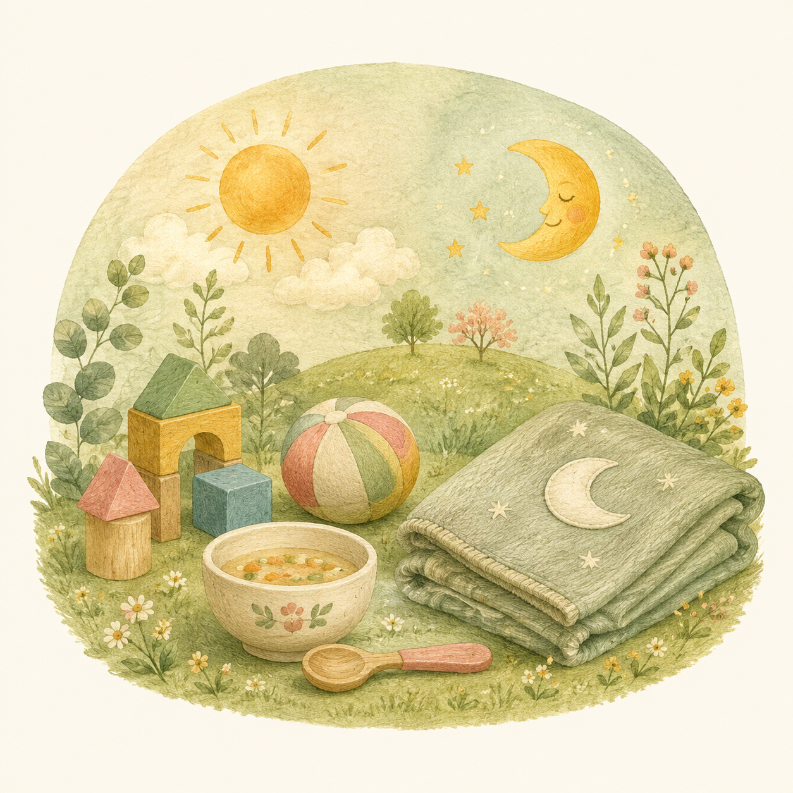

LIFE AT SEIKA
一日の流れ
清華保育園の一日をご紹介します

DAILY PROGRAM
デイリープログラム
3つの年齢グループごとの一日の流れを比較できます
← 横にスクロールできます →
| 時間 | 0歳児 |
3歳未満児 1・2歳児 |
幼児 3〜5歳児 |
|---|---|---|---|
| 7:00 | 早出登園 | 早出登園 | 早出登園 |
| 8:30 |
登園
視診・触診・検温 オムツ交換 |
登園
視診・触診・検温 自由遊び |
登園・視診 園庭自由遊び |
| 9:30 |
|
牛乳・おやつ | 朝の集い |
| 10:00 |
|
みんなで遊ぼう | — |
| 10:20 | — | — |
組別保育
リトミック・英語・ サッカー・体育教室など |
| 11:30 |
|
|
— |
| 12:00 |
|
— |
（主食は持参） |
| 13:00 | — |
|
自由保育 7〜8月は午睡・休息 |
| 15:00 |
|
|
|
| 15:30 | もうすぐお迎え | 楽しかったね | 楽しかったね |
| 16:00 |
|
|
|
| 16:00 〜 18:00 |
居残り保育 | 居残り保育 | 居残り保育 |
| 18:00 〜 19:00 |
延長保育 | 延長保育 | 延長保育 |
給食について
乳児は離乳食、3歳未満児は完全給食を提供しています。幼児は副食のみ園で提供し、主食（ごはんまたはパン）をご家庭からお持ちいただきます。月2回の米飯給食もあります。アレルギー除去食にも対応しています。
NEXT